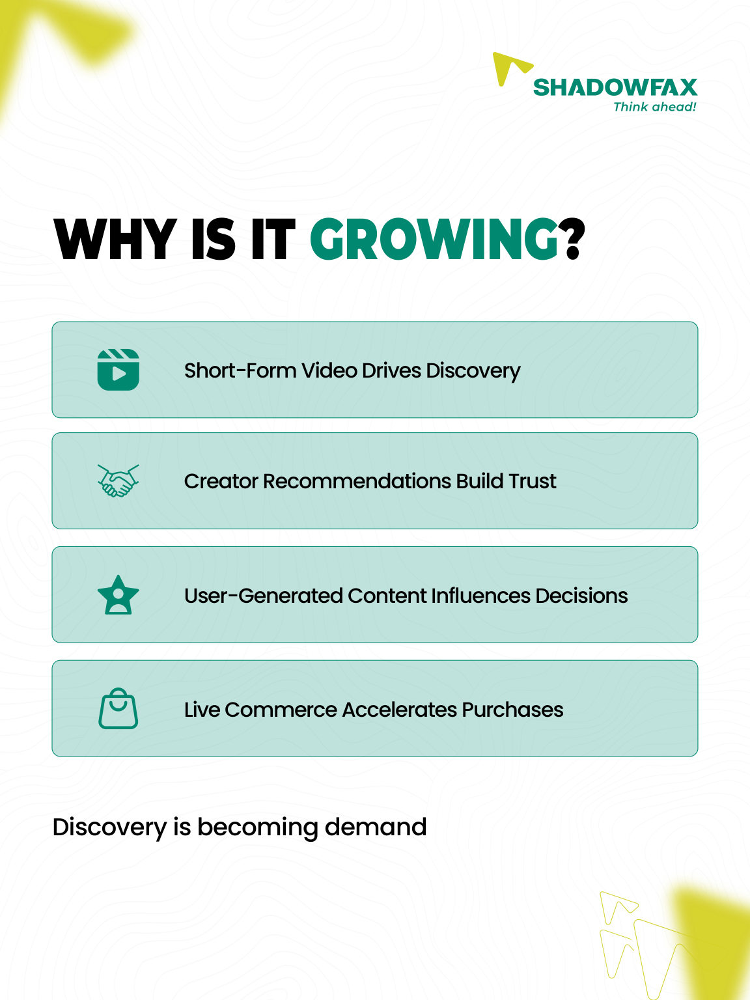
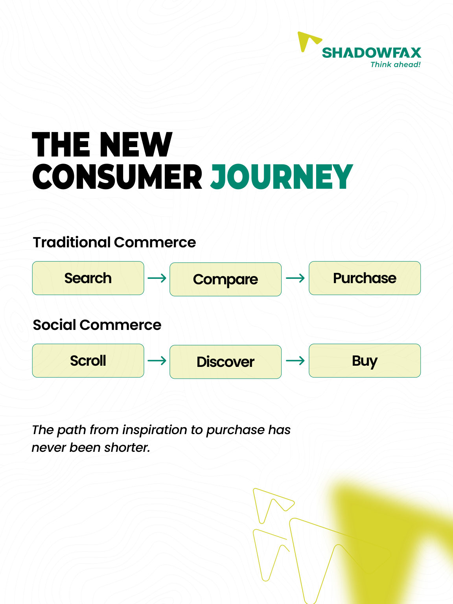
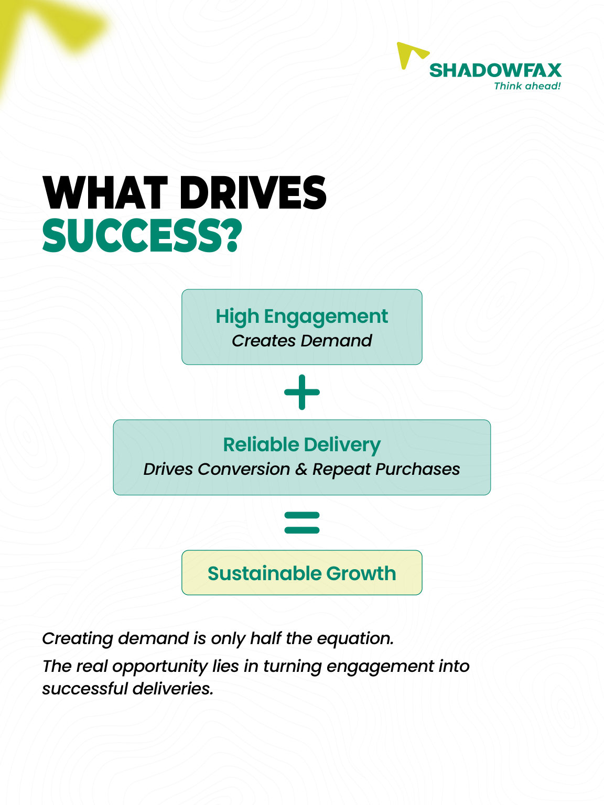
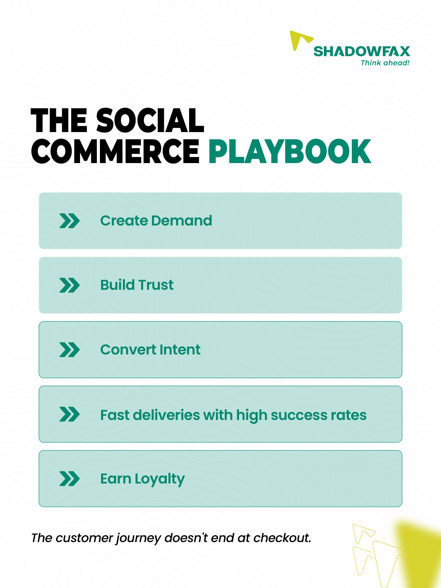

A storefront inside the scroll.
An eight-frame explainer that connects social discovery, shopping behavior and the role of dependable delivery.

The work
The series maps a new consumer journey: from discovering products through short-form content and creators to the delivery experience that follows checkout. It moves from defining social commerce to the practical elements of a repeatable customer experience.
The visual approach
Rather than using a single promotional headline, the layouts divide a complex topic into sequential questions, diagrams and short statements. Teal UI-inspired graphics and product imagery maintain a familiar shopping context throughout.
Introduce
A phone surrounded by commerce elements positions content-led discovery as the start of the shopping journey.
Explain
List cards and a side-by-side journey chart translate ideas about creators, user content and checkout into digestible visual information.
Connect to the brand
The final frames link consumer enthusiasm with delivery reliability, finishing on the Shadowfax logistics ecosystem.
The full sequence.
Every frame from the supplied design is shown below in reading order. Open any image to view it at full size.



